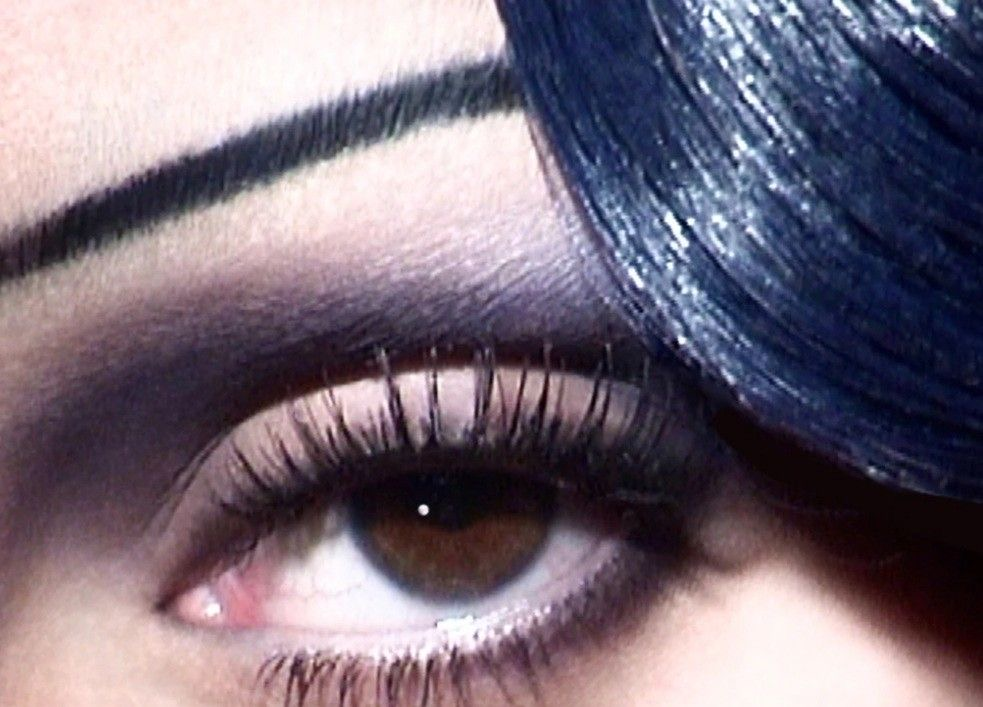

Hello! My name is Tyler Lallande. Im currently studying software engineering at the Louisiana State Univerity. My plans for the future are to combine tech and fashion. Two things im super passionate about.
Geek Squad September 2026 – Present Best Buy, Baton Rouge, LA • Diagnosed and resolved customer hardware, software, connectivity, and device-performance issues. • Assisted customers with computer setup, data transfer, operating-system support, and technology recommendations. • Explained technical solutions clearly to customers and provided personalized support in a fast-paced retail environment.
Mobile Expert T-Mobile